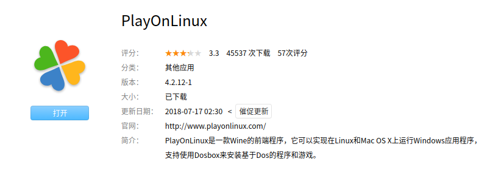
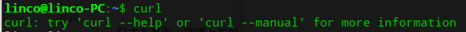
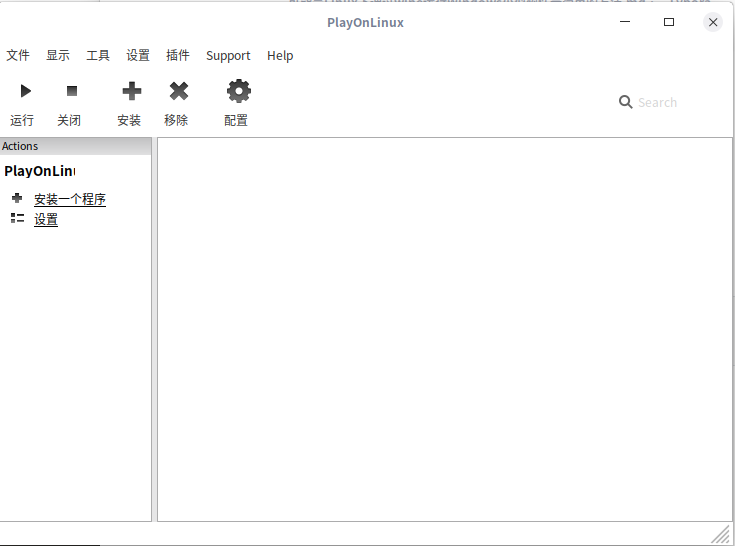
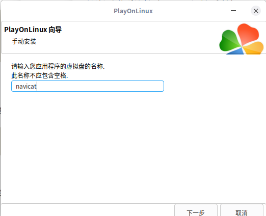
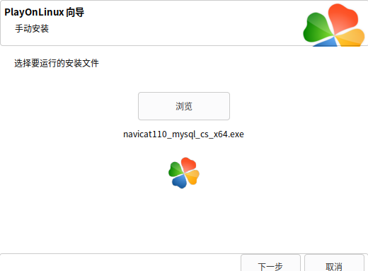
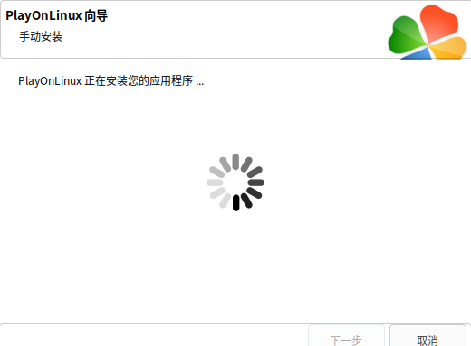
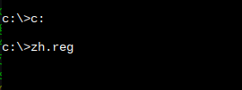
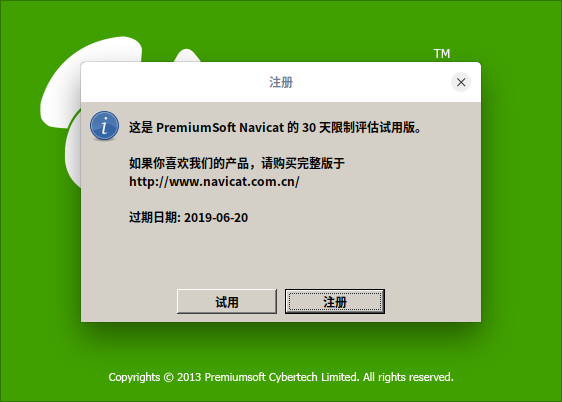

<!DOCTYPE html>
<html lang class="loading">
<head><meta name="generator" content="Hexo 3.8.0">
    <meta charset="UTF-8">
    <meta http-equiv="X-UA-Compatible" content="IE=edge,chrome=1">
    <meta name="viewport" content="width=device-width, minimum-scale=1.0, maximum-scale=1.0, user-scalable=no">
    <title>可能是Linux下通过wine运行Windows小型软件最简单的方法 - Linco</title>
    <meta name="apple-mobile-web-app-capable" content="yes">
    <meta name="apple-mobile-web-app-status-bar-style" content="black-translucent">
    <meta name="google" content="notranslate">
    <meta name="keywords" content="Linco, Blog,"> 
    <meta name="description" content="这里介绍一个偏冷门的wine工具, 可以简单实现window软件的安装运行, wine一直是运行exe程序最好方法之一. 而Deepin因为crossover商用授权的终止, 在这一方面也和其他li,"> 
    <meta name="author" content="Linco"> 
    <link rel="alternative" href="atom.xml" title="Linco" type="application/atom+xml"> 
    <link rel="icon" href="/img/icon.png"> 
    <link rel="stylesheet" href="//cdn.jsdelivr.net/npm/gitalk@1/dist/gitalk.css">
    <link rel="stylesheet" href="/css/diaspora.css">

</head>
</html>
<body class="loading">
    <span id="config-title" style="display:none">Linco</span>
    <div id="loader"></div>
    <div id="single">
    <div id="top" style="display: block;">
    <div class="bar" style="width: 0;"></div>
    <a class="icon-home image-icon" href="javascript:;" data-url></a>
    <div title="播放/暂停" class="icon-play"></div>
    <h3 class="subtitle">可能是Linux下通过wine运行Windows小型软件最简单的方法</h3>
    <div class="social">
        <!--<div class="like-icon">-->
            <!--<a href="javascript:;" class="likeThis active"><span class="icon-like"></span><span class="count">76</span></a>-->
        <!--</div>-->
        <div>
            <div class="share">
                <a title="获取二维码" class="icon-scan" href="javascript:;"></a>
            </div>
            <div id="qr"></div>
        </div>
    </div>
    <div class="scrollbar"></div>
</div>

    <div class="section">
        <div class="article">
    <div class="main">
        <h1 class="title">可能是Linux下通过wine运行Windows小型软件最简单的方法</h1>
        <div class="stuff">
            <span>五月 16, 2019</span>
            
  <ul class="post-tags-list"><li class="post-tags-list-item"><a class="post-tags-list-link" href="/tags/Linux/">Linux</a></li></ul>


        </div>
        <div class="content markdown">
            <p>这里介绍一个偏冷门的wine工具, 可以简单实现window软件的安装运行, wine一直是运行exe程序最好方法之一. 而Deepin因为crossover商用授权的终止, 在这一方面也和其他linux平台回到了同一起跑线</p>
<p>playonlinux <a href="https://www.playonlinux.com" target="_blank" rel="noopener">官网</a></p>
<p>如果是Deepin系统, 可以直接在应用商店搜索安装</p>
<p></p>
<p>如果是其他系统, 先检查 curl 是否已安装</p>
<p></p>
<p>如果没有, apt 或 yum 装上</p>
<p>随后, apt 或 yum 安装 playonlinux</p>
<figure class="highlight plain"><table><tr><td class="gutter"><pre><span class="line">1</span><br><span class="line">2</span><br></pre></td><td class="code"><pre><span class="line">sudo apt-get install playonlinux </span><br><span class="line">yum install playonlinux</span><br></pre></td></tr></table></figure>
<p>安装完成后, 在图标列表找到程序打开</p>
<p></p>
<p>选择 安装一个程序</p>
<p>左下角选择 安装未在列表的程序</p>
<p>下一步, 选择 新的虚拟盘</p>
<p></p>
<p>输入你想要的盘名, 一个虚拟盘可以安装多款软件, 我这是要安装navicat, 所以直接以navicat命名了</p>
<p>这里的虚拟盘不同于虚拟机的虚拟磁盘, 它在本地系统中就是一个普通的文件夹, 内部文件都是我们安装的程序数据, 并且可以直接浏览, 而不是虚拟机那样是一个包装了庞大操作系统的镜像文件</p>
<p>一直 next, 直到虚拟盘创建好</p>
<p>浏览选择要安装或运行的文件</p>
<p></p>
<p>顺序安装, 等待完成</p>
<p></p>
<p>部分软件中文会乱码, 需要设置中文字体</p>
<p>从 ~/.PlayOnLinux/fonts 复制 simsun.ttc 到 ~/.PlayOnLinux/wineprefix/(盘名)/drive_c/windows/Fonts目录</p>
<p>复制以下内容</p>
<figure class="highlight plain"><table><tr><td class="gutter"><pre><span class="line">1</span><br><span class="line">2</span><br><span class="line">3</span><br><span class="line">4</span><br><span class="line">5</span><br><span class="line">6</span><br><span class="line">7</span><br><span class="line">8</span><br><span class="line">9</span><br><span class="line">10</span><br><span class="line">11</span><br><span class="line">12</span><br><span class="line">13</span><br><span class="line">14</span><br><span class="line">15</span><br><span class="line">16</span><br><span class="line">17</span><br><span class="line">18</span><br><span class="line">19</span><br><span class="line">20</span><br><span class="line">21</span><br><span class="line">22</span><br><span class="line">23</span><br><span class="line">24</span><br><span class="line">25</span><br><span class="line">26</span><br></pre></td><td class="code"><pre><span class="line">REGEDIT4</span><br><span class="line">[HKEY_LOCAL_MACHINE\Software\Microsoft\Windows NT\CurrentVersion\FontSubstitutes]</span><br><span class="line">&quot;Arial&quot;=&quot;simsun&quot;</span><br><span class="line">&quot;Arial CE,238&quot;=&quot;simsun&quot;</span><br><span class="line">&quot;Arial CYR,204&quot;=&quot;simsun&quot;</span><br><span class="line">&quot;Arial Greek,161&quot;=&quot;simsun&quot;</span><br><span class="line">&quot;Arial TUR,162&quot;=&quot;simsun&quot;</span><br><span class="line">&quot;Courier New&quot;=&quot;simsun&quot;</span><br><span class="line">&quot;Courier New CE,238&quot;=&quot;simsun&quot;</span><br><span class="line">&quot;Courier New CYR,204&quot;=&quot;simsun&quot;</span><br><span class="line">&quot;Courier New Greek,161&quot;=&quot;simsun&quot;</span><br><span class="line">&quot;Courier New TUR,162&quot;=&quot;simsun&quot;</span><br><span class="line">&quot;FixedSys&quot;=&quot;simsun&quot;</span><br><span class="line">&quot;Helv&quot;=&quot;simsun&quot;</span><br><span class="line">&quot;Helvetica&quot;=&quot;simsun&quot;</span><br><span class="line">&quot;MS Sans Serif&quot;=&quot;simsun&quot;</span><br><span class="line">&quot;MS Shell Dlg&quot;=&quot;simsun&quot;</span><br><span class="line">&quot;MS Shell Dlg 2&quot;=&quot;simsun&quot;</span><br><span class="line">&quot;System&quot;=&quot;simsun&quot;</span><br><span class="line">&quot;Tahoma&quot;=&quot;simsun&quot;</span><br><span class="line">&quot;Times&quot;=&quot;simsun&quot;</span><br><span class="line">&quot;Times New Roman CE,238&quot;=&quot;simsun&quot;</span><br><span class="line">&quot;Times New Roman CYR,204&quot;=&quot;simsun&quot;</span><br><span class="line">&quot;Times New Roman Greek,161&quot;=&quot;simsun&quot;</span><br><span class="line">&quot;Times New Roman TUR,162&quot;=&quot;simsun&quot;</span><br><span class="line">&quot;Tms Rmn&quot;=&quot;simsun&quot;</span><br></pre></td></tr></table></figure>
<p>到 device_c 创建 zh.reg文件粘贴入</p>
<p>到 配置 -&gt; 选择镜像 -&gt; 命令提示符</p>
<p>执行以下命令</p>
<p></p>
<p>大功告成</p>
<p></p>

            <!--[if lt IE 9]><script>document.createElement('audio');</script><![endif]-->
            <audio id="audio" loop="1" preload="auto" controls="controls" data-autoplay="true">
                <source type="audio/mpeg" src="/music/default_bgm.mp3">
            </audio>
            
        </div>
        
    <div id="gitalk-container" class="comment link" data-ae="false" data-ci="978518cc439cd352dd0b" data-cs="2d89825e7db6df72d065714d6b4ac1ce1829b14e" data-r="LincoXiaoQ.github.io" data-o="LincoXiaoQ" data-a="LincoXiaoQ" data-d="false">查看评论</div>


    </div>
    
</div>


    </div>
</div>
</body>
<script src="//cdn.jsdelivr.net/npm/gitalk@1/dist/gitalk.min.js"></script>
<script src="//lib.baomitu.com/jquery/1.8.3/jquery.min.js"></script>
<script src="/js/plugin.js"></script>
<script src="/js/diaspora.js"></script>
<link rel="stylesheet" href="/photoswipe/photoswipe.css">
<link rel="stylesheet" href="/photoswipe/default-skin/default-skin.css">
<script src="/photoswipe/photoswipe.min.js"></script>
<script src="/photoswipe/photoswipe-ui-default.min.js"></script>

<!-- Root element of PhotoSwipe. Must have class pswp. -->
<div class="pswp" tabindex="-1" role="dialog" aria-hidden="true">
    <!-- Background of PhotoSwipe. 
         It's a separate element as animating opacity is faster than rgba(). -->
    <div class="pswp__bg"></div>
    <!-- Slides wrapper with overflow:hidden. -->
    <div class="pswp__scroll-wrap">
        <!-- Container that holds slides. 
            PhotoSwipe keeps only 3 of them in the DOM to save memory.
            Don't modify these 3 pswp__item elements, data is added later on. -->
        <div class="pswp__container">
            <div class="pswp__item"></div>
            <div class="pswp__item"></div>
            <div class="pswp__item"></div>
        </div>
        <!-- Default (PhotoSwipeUI_Default) interface on top of sliding area. Can be changed. -->
        <div class="pswp__ui pswp__ui--hidden">
            <div class="pswp__top-bar">
                <!--  Controls are self-explanatory. Order can be changed. -->
                <div class="pswp__counter"></div>
                <button class="pswp__button pswp__button--close" title="Close (Esc)"></button>
                <button class="pswp__button pswp__button--share" title="Share"></button>
                <button class="pswp__button pswp__button--fs" title="Toggle fullscreen"></button>
                <button class="pswp__button pswp__button--zoom" title="Zoom in/out"></button>
                <!-- Preloader demo http://codepen.io/dimsemenov/pen/yyBWoR -->
                <!-- element will get class pswp__preloader--active when preloader is running -->
                <div class="pswp__preloader">
                    <div class="pswp__preloader__icn">
                      <div class="pswp__preloader__cut">
                        <div class="pswp__preloader__donut"></div>
                      </div>
                    </div>
                </div>
            </div>
            <div class="pswp__share-modal pswp__share-modal--hidden pswp__single-tap">
                <div class="pswp__share-tooltip"></div> 
            </div>
            <button class="pswp__button pswp__button--arrow--left" title="Previous (arrow left)">
            </button>
            <button class="pswp__button pswp__button--arrow--right" title="Next (arrow right)">
            </button>
            <div class="pswp__caption">
                <div class="pswp__caption__center"></div>
            </div>
        </div>
    </div>
</div>


</html>
